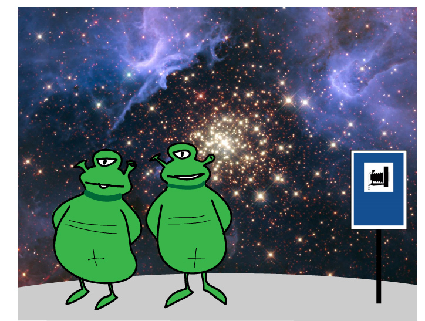

8.Trabajo final
| FICHA DE TAREA | |
|
Biología y Geología de 4ºESO |
|
|
Nuestro lugar en el Universo
TAREA 1: La Enciclopedia Galactica
|
1.-CRITERIOS DE EVALUACION:
La tarea se valora sobre 100 puntos:
- La respuesta correcta a la cuestión planteada valdrá 40 puntos.
- La originalidad y la creatividad en la redacción 20 puntos.
- Las imagen o imagenes que acompañen al texto y lo complementen 30 puntos.
- Citar de forma clara las fuentes de donde hemos obtenido la información y las imagenes 10 puntos. Se valorará añadir enlaces.
2.-INTRODUCCION:
Vamos a imaginarnos redactores de una futura Enciclopedia Galáctica donde se van a responder a las preguntas más importantes sobre nuestro Universo. Cada uno de nosotros daremos respuesta a una de las 50 preguntas básicas, podemos elegir la que queramos siempre que otro compañero no se nos haya adelantado.
En el siguiente apartado tienes la lista de las 50 preguntas y un ejemplo de cómo hacerlo. Ten en cuenta que valoraremos sobre todo tu creatividad, no te conformes con un simple "corta-pega". El texto no es necesario que supere las 10-20 lineas.

- Ordenador.
- Conexión a internet.
- Contenidos de este tema.
4.-FORMATO DE ENTREGA:
El trabajo se publicará en un foro alojado en el Classroom de Biología 4ºESO con el autor perfectamente identificado (Nombre y apellidos).